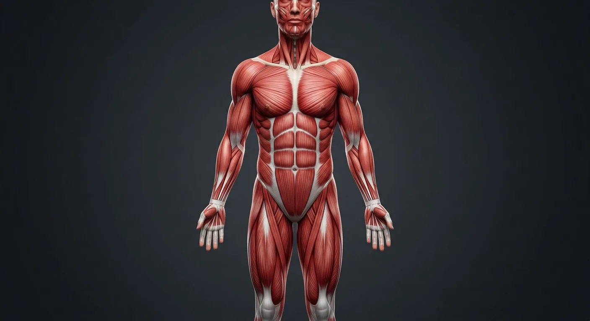
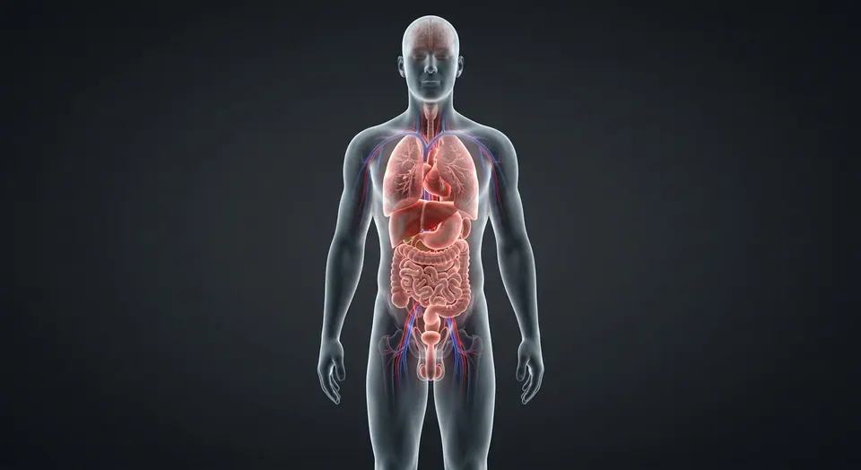
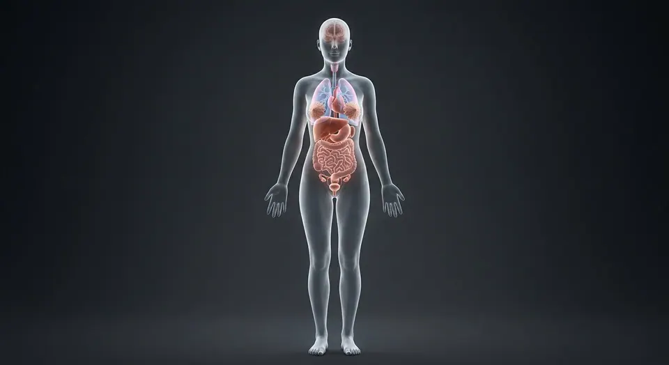

SternocleidomastoidDeltoidPectoralis majorSerratus anteriorBiceps brachiiLatissimus dorsiExternal obliquesForearm flexorsAdductor groupQuadriceps femorisPatellar tendonTibialis anteriorAchilles (calcaneal) tendonRotator cuff muscle groupTrapeziusDiaphragm central tendonTransversus abdominisRectus abdominisPelvic diaphragmPlantar intrinsic muscles- 01Sternocleidomastoid
- 02Trapezius
- 03Deltoid
- 04Pectoralis major
- 05Biceps brachii
- 06Forearm flexors
- 07Rectus abdominis
- 08External obliques
- 09Latissimus dorsi
- 10Quadriceps femoris
- 11Tibialis anterior
- 12Adductor group
- 13Serratus anterior
- 14Achilles (calcaneal) tendon
- 15Patellar tendon
- 16Rotator cuff muscle group
- 17Pelvic diaphragm
- 18Transversus abdominis
- 19Diaphragm central tendon
- 20Plantar intrinsic muscles
How this part of the body works
Surface-to-deep anterior musculature: origin-insertion logic and the clinical test for each.
Read the anatomy, part by part
These 20 structures describe anatomy related to the chapter’s regional illustration. Each entry separates location, function and a clinical point.
Sternocleidomastoid
Mastoid to sternum+clavicle.
What it doesHead rotation and neck flexion.
Clinical connectionTorticollis; landmark for carotid pulse.
Trapezius
Occiput to scapular spine.
What it doesShrug and scapular rotation.
Clinical connectionAccessory nerve palsy → shrug weakness.
Deltoid
Clavicle/scapula to humeral shaft.
What it doesArm abduction beyond 15°.
Clinical connectionIM injection site — axillary nerve beneath.
Pectoralis major
Clavicle/sternum to humerus.
What it doesArm adduction and push power.
Clinical connectionTorn in bench-press injuries.
Biceps brachii
Scapula to radial tuberosity.
What it doesElbow flexion + supination.
Clinical connectionLong-head tendon rupture → Popeye deformity.
Forearm flexors
Medial epicondyle group.
What it doesWrist and finger flexion.
Clinical connectionGolfer's elbow = medial epicondylitis.
Rectus abdominis
Pubis to costal cartilages.
What it doesTrunk flexion; core pressure.
Clinical connectionDiastasis recti postpartum — midline gap.
External obliques
Ribs to iliac crest + linea alba.
What it doesTrunk rotation and lateral flexion.
Clinical connectionInguinal canal roof — hernia repairs use it.
Latissimus dorsi
Spine/iliac to humeral groove.
What it doesPowerful adduction — climbing and pulling.
Clinical connectionFlap donor for breast reconstruction.
Quadriceps femoris
Four heads to patellar tendon.
What it doesKnee extension — standing and stairs.
Clinical connectionQuadriceps lag after knee surgery.
Tibialis anterior
Tibia to medial cuneiform.
What it doesDorsiflexion of the foot.
Clinical connectionWeakness → foot drop and high-stepping gait.
Adductor group
Pubis to femoral linea aspera.
What it doesThigh adduction and groin stability.
Clinical connectionGroin strains in footballers.
Serratus anterior
Ribs to medial scapula.
What it doesScapular protraction and holding.
Clinical connectionLong thoracic nerve palsy → winged scapula.
Achilles (calcaneal) tendon
Gastrocnemius + soleus onto the calcaneus.
What it doesPush-off power in gait and sprint.
Clinical connectionRupture: sudden pop; Thompson test positive.
Patellar tendon
Patella to tibial tuberosity.
What it doesCompletes the knee extensor mechanism.
Clinical connectionJumper's knee = its overuse tendinopathy.
Rotator cuff muscle group
Supraspinatus, infraspinatus, teres minor and subscapularis surround shoulder joint.
What it doesCenter humeral head during motion.
Clinical connectionTendon tears can weaken elevation or rotation.
Pelvic diaphragm
Levator ani and coccygeus form muscular pelvic-floor support.
What it doesSupports pelvic viscera and continence.
Clinical connectionWeakness contributes to pelvic-floor dysfunction.
Transversus abdominis
Deep horizontal-fiber abdominal wall muscle beneath obliques.
What it doesCompresses abdominal contents and stabilizes trunk.
Clinical connectionAponeurosis contributes to rectus sheath.
Diaphragm central tendon
Strong aponeurotic center receiving diaphragm muscle fibers.
What it doesTransmits inspiratory muscle force and supports pericardium.
Clinical connectionPhrenic nerve injury can impair diaphragm movement.
Plantar intrinsic muscles
Small layered muscles of sole acting on toes and foot arches.
What it doesFine-tune stance and toe movement.
Clinical connectionNeuropathy may alter toe posture and balance.
Five questions about Muscular system
Short answers grounded in the structures described above. Use the illustrated guide for anatomical context.
How do skeletal muscles move joints?
Skeletal muscle fibers contract and transmit force through tendons or other attachments. When a muscle crosses a joint, its contraction can pull the attached bones; opposing muscles help control the movement.
Are all human muscles listed among the overview cards?
No. The overview cards introduce major regions, while the linked full-body muscle and tendon atlas contains hundreds of named records. A single fixed count of muscles varies with naming and counting conventions.
Where can I find posterior muscles such as the triceps and hamstrings?
The full-body muscle atlas groups them by arm and thigh region, including deeper layers and sex-specific pelvic floor views. The front-oriented overview image alone cannot identify posterior fibers.
What is the difference between a tendon and a ligament?
A tendon transfers muscular force to an attachment, commonly a bone; a ligament connects bones across a joint. Both consist largely of dense collagenous connective tissue but have different mechanical roles.
Is the diaphragm a skeletal muscle?
Yes. The diaphragm is a dome-shaped skeletal muscle separating the thoracic and abdominal cavities and is the primary muscle used during quiet inspiration. Its central tendon is an attachment region, not a separate muscle.
Related anatomy guides
Follow these connected structures and body systems in the illustrated atlas.
 SkeletonThe frame: leverage for muscle, armour for viscera, a calcium bank, and the marrow factory that makes every blood cell.↗
SkeletonThe frame: leverage for muscle, armour for viscera, a calcium bank, and the marrow factory that makes every blood cell.↗
Male body — anteriorA glass-body view of the male: every major organ in place, from brain to testes, with the reproductive tract in the pelvis.↗
Female body — anteriorA glass-body view of the female: major organs in place, with breasts, uterus and ovaries completing the picture.↗Further reading
General anatomy references and related source chapters for continued study. These links do not make the digital illustrations clinical images or certify every anatomical variant.
This educational page is not medical advice and has not undergone formal clinical peer review. Spotted an error? Contact the editor.
Open the realistic interactive plate, label lines, focus view and self-test.